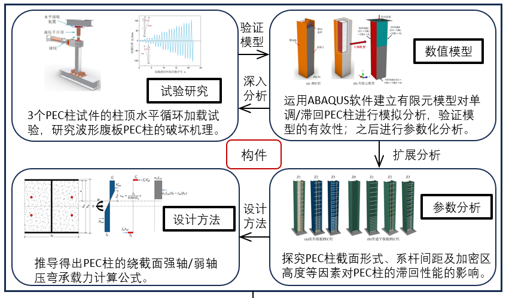
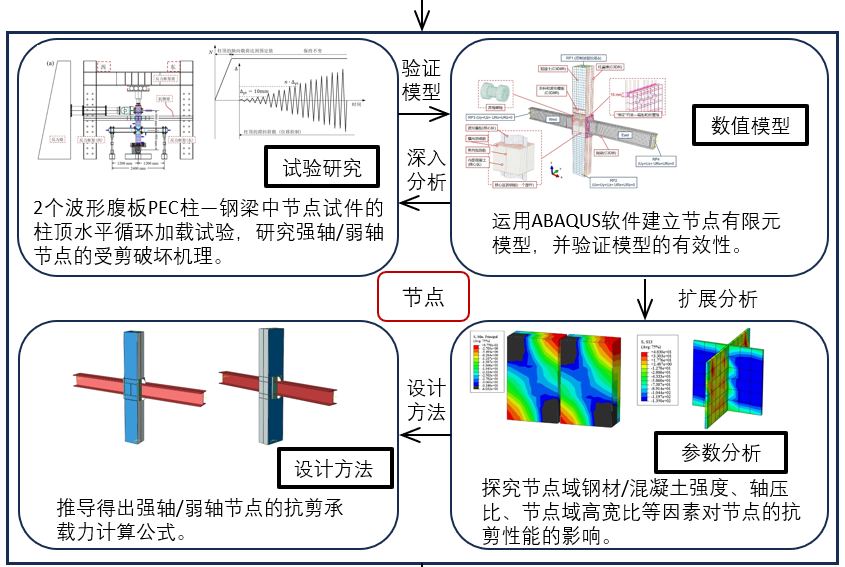
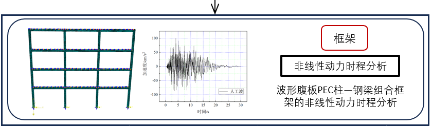

结构抗震设计
本科生课程
蔡恒立，江西水利电力大学土木工程教研室讲师，博士毕业于西安建筑科技大学 （“建筑老八校”之一）结构工程（国家重点学科）专业，本科毕业于南昌大学。 主要研究方向为钢-混凝土组合结构和冷弯型钢结构的受力性能及设计方法研究。
主持 2026 年江西省职业早期青年人才培养项目 1 项，参与国家及其他科研项目 5 项， 在《Journal of Constructional Steel Research》和《Journal of Building Engineering》 等知名学术期刊发表论文 9 篇，其中以第一作者（含导师一作、本人二作）发表 SCI 检索论文 5 篇，通讯作者 1 篇；同时担任钢结构领域国际期刊 《International Journal of Steel Structures》和《Buildings》（SCI）的审稿专家。
博士期间系统研究了钢-混凝土组合结构的受力性能与设计方法，研究对象包括 部分包覆混凝土组合（PEC）柱、PEC 柱-钢梁节点以及 PEC 柱-钢梁组合框架结构。 PEC 结构是一种适合预制装配的组合结构，近年来逐渐成为研究的热点。
2025.07 – 至今
江西水利电力大学 · 土木工程教研室
2020.09 – 2025.06
西安建筑科技大学 · 结构工程（国家重点学科）
2018.09 – 2020.06
西安建筑科技大学 · 防灾减灾工程及防护工程
2012.09 – 2016.06
南昌大学（“211 工程”、“双一流”建设高校）· 土木工程
面向本科生的主讲课程
本科生课程
本科生课程
本科生课程
本科生课程
聚焦组合结构与冷弯型钢结构，面向工程实践中的关键力学问题
聚焦部分包覆混凝土组合（PEC）柱、PEC 柱-钢梁节点及组合框架的抗震性能与设计方法，推动组合结构在预制装配体系中的应用。
研究冷弯轻钢构件及结构体系的受力性能、稳定问题与设计方法，探索轻量化、快速建造的建筑结构方案。
围绕部分包覆混凝土组合（PEC）框架结构、PEC剪力墙结构开展韧性性能提升与设计方法研究。
博士期间围绕 PEC 组合结构体系开展的系统性研究
研究部分包覆混凝土组合（PEC）柱在轴压、偏心受压与往复荷载下的受力性能，通过波形腹板与混凝土的协同工作提升承载力与延性。
研究组合柱与钢梁连接节点的剪切破坏机理、滞回性能与构造措施，为组合框架实现“强节点、弱构件”的抗震设计提供依据。
通过拟静力试验与精细化数值模拟，研究波形腹板 PEC 柱-钢梁组合框架的抗震性能、塑性耗能与设计方法。



内容整理自个人简历（2026.08 更新）
已发表中英文期刊论文 9 篇：第一作者 2 篇，导师一作、本人二作 3 篇，通讯作者 1 篇。
Seismic shear behavior of partially-encased composite column to steel beam joint: Experiment
Seismic performance of partially encased concrete composite columns with corrugated web
Experimental and numerical study on eccentric compression performance of partially encased composite columns with corrugated web
Research on the factors affecting the development of shrinkage cracks of rammed earth buildings
波形腹板部分包覆组合柱强轴偏心受压试验分析
竖向梯形波纹腹板 PEC 柱轴压性能研究
Experimental and numerical studies of an axial tension-compression corrugated steel plate damper
Numerical Simulation of Partially-Encased Composite Columns Under Monotonic and Cyclic Loading
Experimental Investigation of Tensile Behavior of One-Side-Bolted T-Stub Connections
《高强度冷弯型钢基本构件屈曲与相关屈曲破坏机理与设计方法》· 2025.12 – 2030.12
《考虑协同工作的带翼缘内嵌波形钢板混凝土组合剪力墙抗震性能与设计方法研究》· 2023.01 – 2026.12 · 参与
《可恢复功能波形钢板混凝土组合剪力墙抗震性能与设计方法》· 2016.01 – 2019.12 · 参与
《双轴水平加载的 T 形截面竖波钢板组合剪力墙抗震性能与设计方法研究》· 2022.01 – 2024.12 · 参与
《预制波形腹板 PEC 柱-钢梁 SP 板装配式框架结构抗震性能与设计方法研究》· 2021.10 – 2023.10 · 参与
《预制装配式再生混凝土 PEC 框架结构抗震性能与设计方法研究》· 2022.07 – 2025.06 · 参与
担任钢结构领域国际期刊《International Journal of Steel Structures》和《Buildings》（SCI）审稿专家
西安建筑科技大学 · 2022 – 2023 学年
西安建筑科技大学 · 2020 – 2021 学年
西安建筑科技大学 · 2019 – 2020 学年
西安建筑科技大学 · 2018 – 2019 学年
南昌大学 · 2013 – 2014 学年第一学期
欢迎对钢-混凝土组合结构、冷弯轻钢结构等方向感兴趣的同行和学生来信交流。